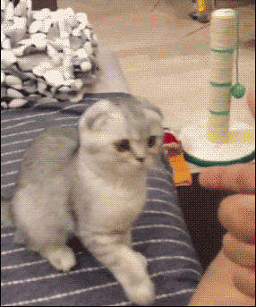
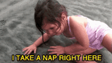

Проекты по проектированию были на стадии создания фирменного стиля, начали изучать Indesign на технологиях дизайна, а еще узнали, что нужно делать вот этот дневник. На футурологии все было хорошо, на социологии все еще продолжала испытывать вселенский стресс из-за того, что все всегда обсуждали жизненные истории; начало казаться, что социолог проводит эксперимент и эти пары - всего лишь площадка для него. Все еще так кажется, узнаю об этом в следующем модуле.
Занятия "Аштимель сквада" немного сдвинулись из-за приближающейся сессии, многие поселились в Школе Дизайна и встречались в очереди в Даблби с утра.
Было немного нервно: в воскресенье я переделала финальную презентацию около 20 раз. В понедельник прошел просмотр по креативному проектированию, оценки до сих пор неизвестны (спасибо, что я все еще пью глицин). Работа над дневником продолжается, сложно понять, насколько свободно определение "свободный формат" и можно ли вести дневник так, как веду его я. Надеюсь, мои последователи не будут меня осуждать: такие тексты читаются легче, чем серьезные и взрослые.
С одногруппниками почти поселились в Школе: приходим сюда в свете дня, а уходим под шумок метлы уборщицы. Кстати, на будущее: в субботу всех прогоняют уже в 20:00... Надеюсь, во втором модуле будет полегче, потому что теперь мы знаем нашего врага - сессию - в лицо.